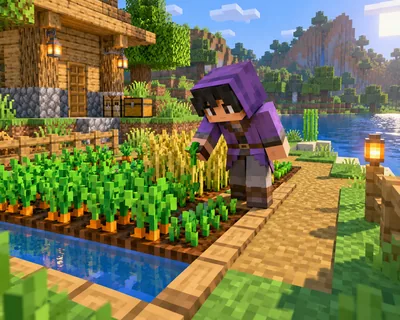

食物与农场 难度 · 进阶 约 54 词
Start with a Small Farm
第一块农田怎么安排？

这篇讲什么
第一座农场不需要很大的田地。
核心词:Farm Field —— 在画面里找到它,再把单词念出来。
You do not need a huge field for your first farm.
游戏里会用到的一句,读两遍再抄一次。
食物与农场 难度 · 进阶 约 54 词
第一块农田怎么安排？

第一座农场不需要很大的田地。
核心词:Farm Field —— 在画面里找到它,再把单词念出来。
You do not need a huge field for your first farm.
游戏里会用到的一句,读两遍再抄一次。